MINT OREO Linux Mini PC
Hardware Repurposing, Linux & Custom FDM Enclosure
A compact Linux entertainment computer built by repurposing hardware from an aging HP laptop, optimizing the system for 1080p media playback, and designing a custom 3D-printed enclosure from scratch to serve as a dedicated bedside YouTube station.
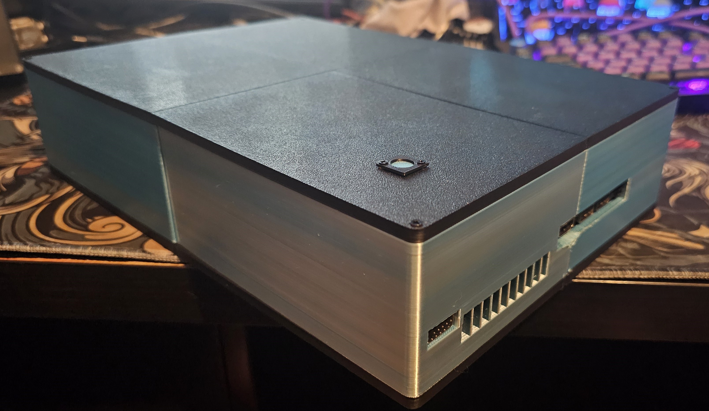
MINT OREO
Mini Integrated Notebook Transplant Operating as a Repurposed Entertainment Outpost
Quick Facts
| Role | Designer, Fabricator & System Integrator |
| Final Donor System | HP Pavilion 17 laptop motherboard |
| Processor | Intel Core i3-3110M |
| Graphics | Intel HD Graphics 4000 |
| Memory | 12 GB RAM |
| Storage | 128 GB ADATA SP600 SATA SSD |
| Operating System | Linux Mint XFCE 22.3 |
| Enclosure Design | Onshape - designed from scratch |
| Fabrication | Bambu Lab A1 Mini, 0.4 mm nozzle |
| Materials | Black PLA + blue/silver silk PLA |
| Primary Use | YouTube and lightweight entertainment |
| Project Motivation | Dedicated TV media station to avoid repeatedly moving my daily laptop |
| Final Performance | Stable 1080p YouTube playback with almost no dropped frames |
Project Overview
Giving Old Hardware a New Purpose
MINT OREO began as an experiment to determine whether functional hardware from an aging laptop could be given a useful second life instead of being discarded.
Solving a Real Everyday Problem
The larger motivation came from a small but repeated inconvenience. Before this project, I used my main modern laptop as a temporary media station by connecting it through HDMI to the TV near my bed for YouTube playback at night.
As a college student, that laptop was also the computer I carried back and forth in my backpack. This meant repeatedly unplugging and reconnecting the HDMI cable, worrying about long-term wear on the laptop's HDMI port, and occasionally getting ready for bed only to realize the laptop was still packed away and not connected to the TV. The goal of MINT OREO was to replace that temporary setup with a dedicated, always-available media computer.
The project initially centered around the motherboard from the first laptop I ever owned, an older HP system using an AMD processor. I removed the motherboard from its original chassis, evaluated its thermal performance, experimented with Linux, and began planning a custom enclosure that could convert the laptop hardware into a desktop-style mini PC.
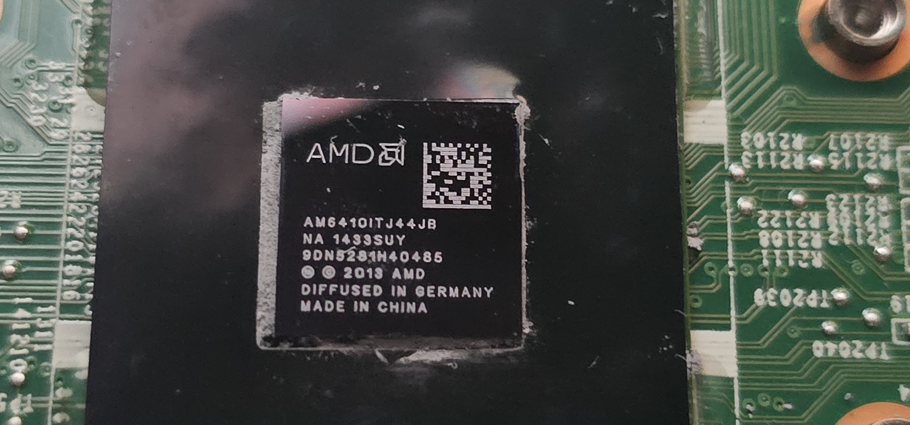
The AMD platform from my first laptop was the original basis for the project.
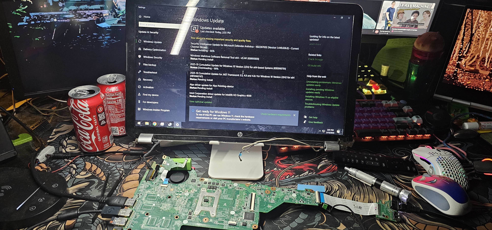
Early bench testing before the system was integrated into a dedicated enclosure.
Testing eventually showed that the AMD hardware was not well suited to the intended workload. A second motherboard from my grandmother's former HP Pavilion 17 became available and provided substantially better thermal and media-playback performance.
The project therefore evolved beyond simply rehousing a laptop motherboard. It became a process of comparing two aging computing platforms, selecting hardware based on real-world performance, troubleshooting standalone laptop operation, configuring Linux, and designing an entirely new mechanical enclosure around the final system.
Hardware Selection
AMD Platform - Original Concept
The original AMD motherboard remained functional, but thermal testing revealed temperatures that were too high for a system intended for extended media playback.
Intel Platform - Final Selection
The HP Pavilion 17 motherboard used an Intel Core i3-3110M with Intel HD Graphics 4000. It provided substantially lower operating temperatures and a noticeably smoother YouTube experience.
| Workload | Original AMD Board | Intel Core i3 Board |
|---|---|---|
| Idle | ~75 °C | ~50 °C |
| YouTube Playback | ~90-100 °C | ~60-70 °C |
Engineering Decision: Rather than continuing to optimize a platform that was poorly suited to the intended workload, I changed the final hardware platform. The Intel system produced a much larger improvement in temperature and media performance than further modification of the original AMD system.
Cooling System Service
Before enclosure design began, the cooling system of the Intel board was serviced. The original laptop blower fan and heatsink were cleaned, and the aging thermal compound was replaced with fresh thermal paste.
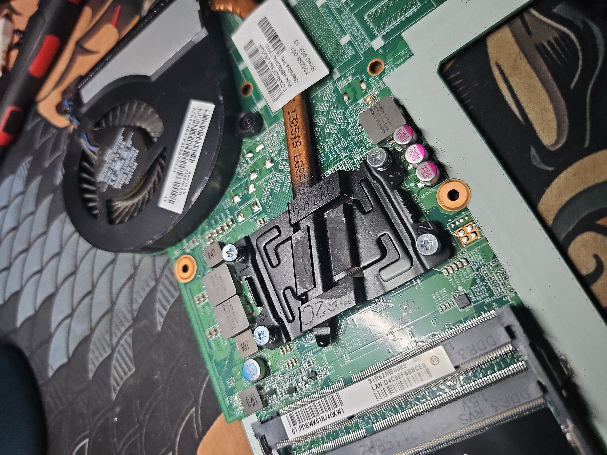
The original HP heat pipe and blower assembly was retained in the finished system. Because the Intel platform operated at much lower temperatures than the AMD board, the factory cooling system remained effective once it had been cleaned and repasted.
External Display Troubleshooting
A Laptop Motherboard Without a Laptop Display
One of the largest challenges in converting the HP Pavilion 17 into a standalone mini PC was external display behavior.
The motherboard was designed around its original internal LCD panel. Although HDMI could function after the operating system loaded, the board would not display POST or BIOS screens over HDMI when the internal laptop display was disconnected.
Known Limitation: Normal Linux operation uses the external HDMI display, but accessing POST or BIOS configuration still requires connecting the original internal laptop display interface.
Windows Driver Investigation
Windows was initially used as a diagnostic environment while I determined whether the external-display problems were caused by hardware, firmware, or graphics configuration.
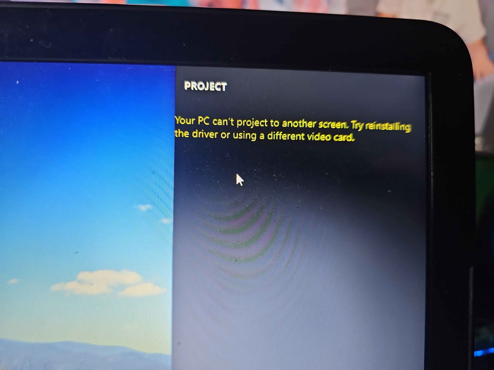
Early Windows external-display failure.

The graphics hardware was initially recognized only as Microsoft Basic Display Adapter.
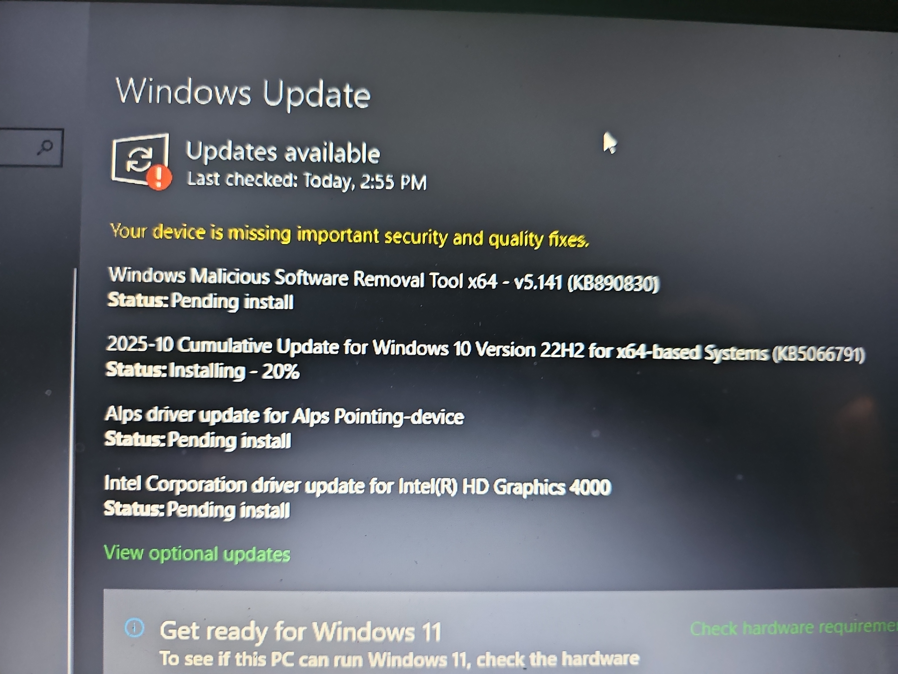
Installing the correct Intel graphics driver.

Successful recognition of Intel HD Graphics 4000.
Correct driver installation confirmed that the graphics hardware and HDMI interface were functional, helping isolate the remaining behavior to system configuration and firmware limitations.
BIOS Testing

BIOS boot settings, UEFI configuration, legacy support, and other startup options were investigated while attempting to obtain external video before the operating system loaded. The limitation remained, even though HDMI worked after startup.
Linux Migration
Linux Mint XFCE 22.3
The completed computer uses Linux Mint XFCE 22.3. XFCE was selected for its relatively lightweight desktop environment, allowing more of the available hardware resources to be dedicated to browser and video playback.
Early Linux testing was not completely straightforward. Compatibility boot options were explored through GRUB, and Windows had left the existing NTFS filesystem in a hibernated state that Linux refused to mount read-write.
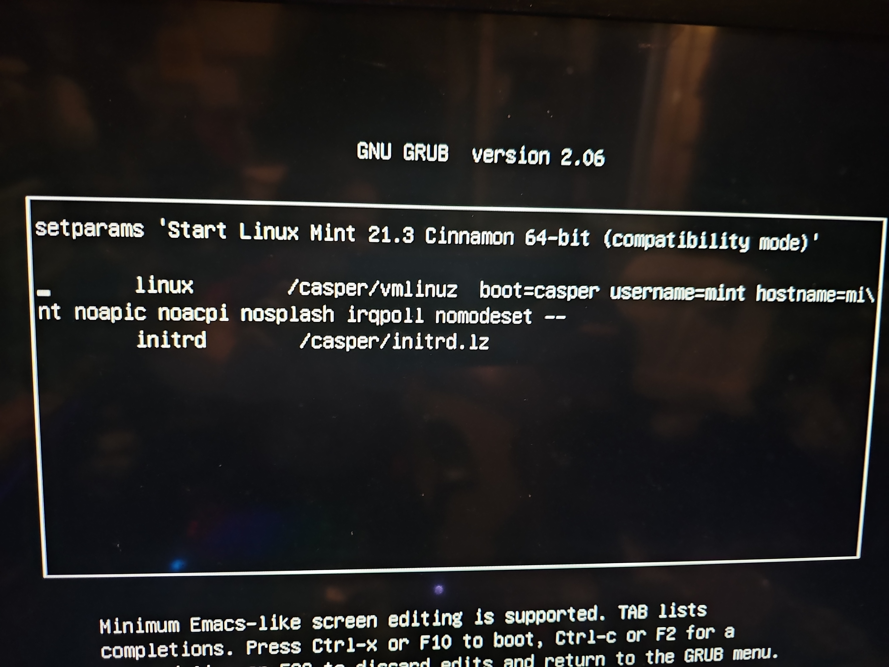
GRUB compatibility troubleshooting.
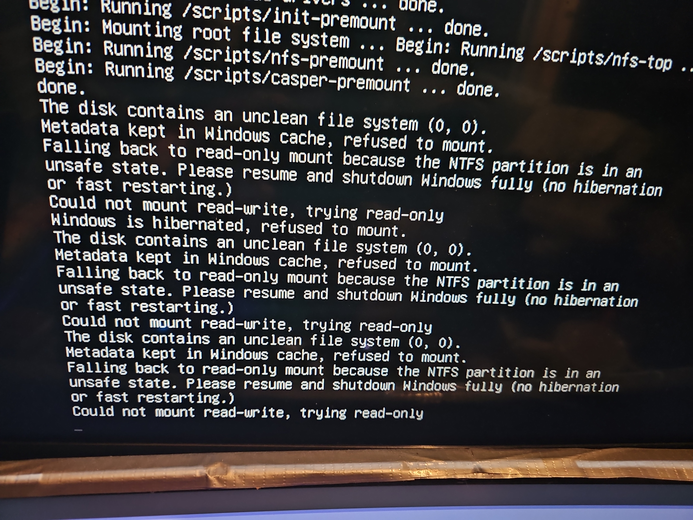
NTFS mount failure caused by Windows hibernation.
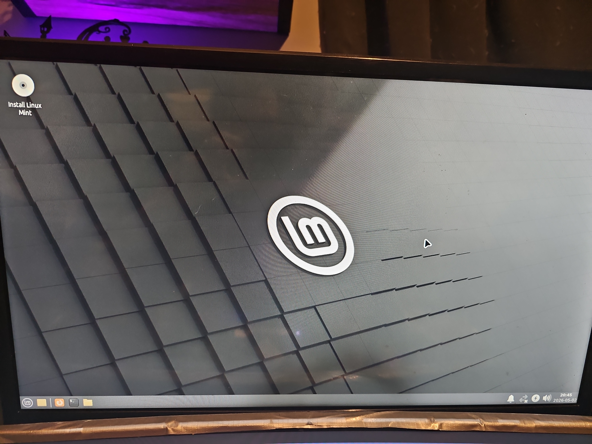
Successful Linux Mint boot.
Getting HDMI Working Under Linux
After Linux Mint was installed, the external monitor appeared in the
system's display configuration and was detected through
xrandr, but initially produced no visible image.
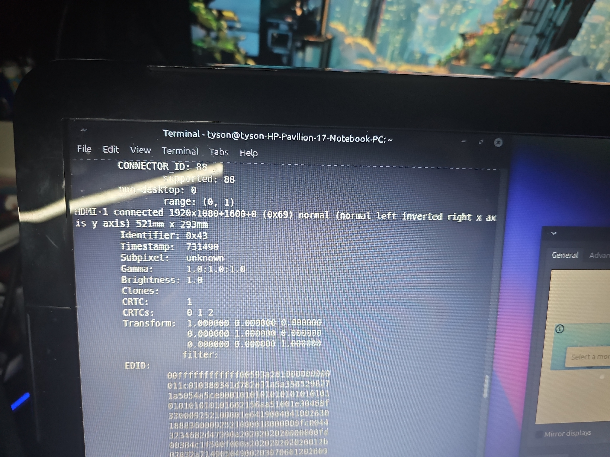
The terminal output confirmed that HDMI was physically connected and that Linux recognized the external display at 1920 x 1080. This helped show that the issue was not simply a failed connector or undetected monitor.
The breakthrough came from disabling XFCE display compositing. After compositing was disabled, the HDMI display began operating normally. The fix continued working after reboot, and the original LVDS laptop display could then be disabled within Linux.
Final Display Behavior: The system now boots into Linux and operates entirely from an external HDMI display during normal use. The original laptop panel is only required when direct BIOS/POST access is needed.
Media Playback Optimization
Getting the computer to boot successfully was only part of the goal. The system needed to be convenient enough to replace the laptop I had been repeatedly connecting to my TV, and capable enough that using it for nightly YouTube playback would not feel like a compromise.
Browser behavior, hardware acceleration, video codec selection, display settings, and desktop compositing were evaluated specifically around YouTube playback on the older Intel hardware.
With the final Linux and browser configuration, the system can provide stable 1080p YouTube playback with almost no dropped frames. This became the performance target that defined the final system as successful.
Custom Enclosure Design
Designed from Scratch in Onshape
Once the electronics and software configuration were sufficiently stable, I designed an entirely new enclosure in Onshape around the HP Pavilion 17 motherboard.
Unlike standardized desktop hardware, the laptop motherboard has an irregular outline, proprietary mounting locations, distributed I/O, ribbon-connected daughterboards, and cooling hardware originally designed around the laptop chassis.
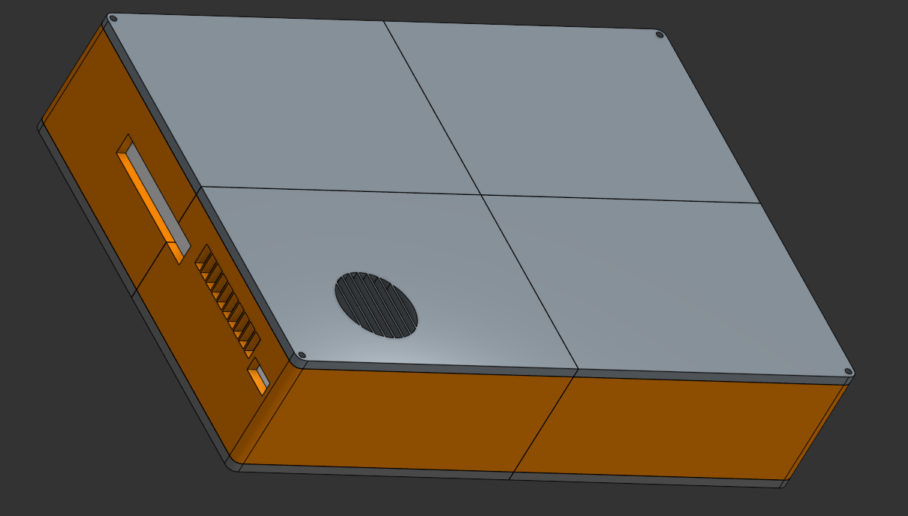
The enclosure was therefore built around the motherboard itself as the primary mechanical constraint. Dedicated mounting points, ventilation openings, port cutouts, removable panels, and internal component clearances were incorporated directly into the CAD model.
Motherboard Layout & Fit Testing
Accurately transferring the motherboard mounting pattern into CAD was one of the most important parts of the enclosure design.
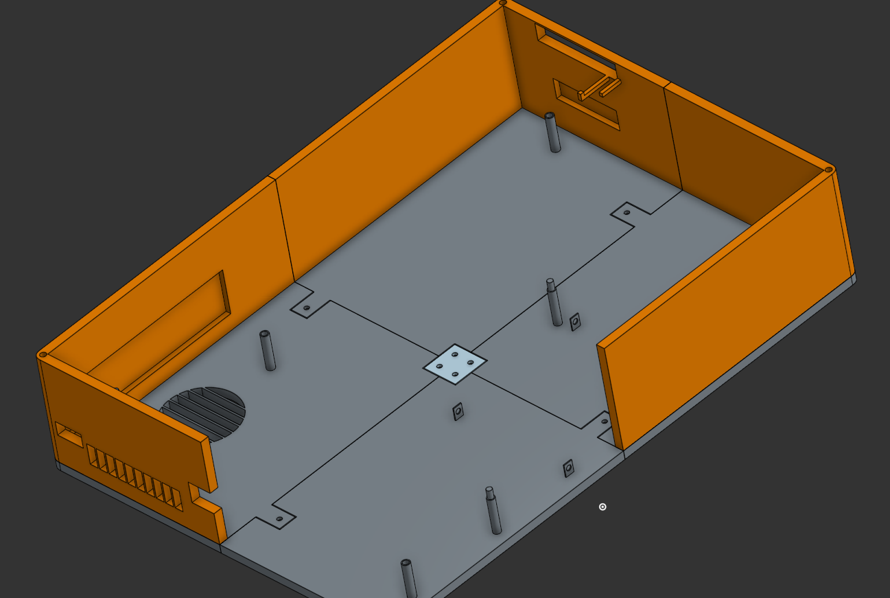
Rather than repeatedly printing complete enclosure sections, I created several simplified and skeletonized test prints containing the geometry needed to verify mounting-hole locations and component clearances.
This allowed the motherboard standoff layout to be refined while using less filament and reducing print time before committing to the complete enclosure.
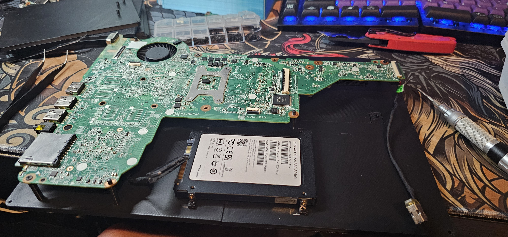
Physical fit testing of the motherboard and SSD against the printed base.
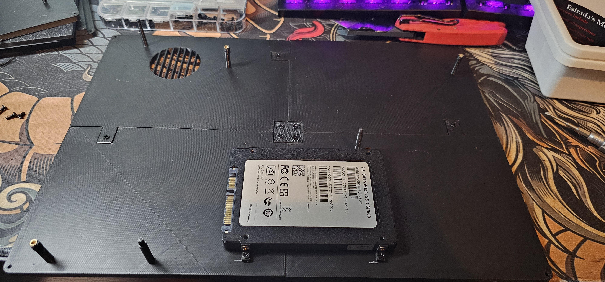
Internal mounting geometry after the standoff layout was established.
Modular Component Mounting
Adapting Instead of Reprinting
Once the primary enclosure was printed, several smaller mounting features either required adjustment or were damaged during assembly. Instead of discarding the completed enclosure and printing an entirely new version, I designed small screw-mounted repair and retention pieces.
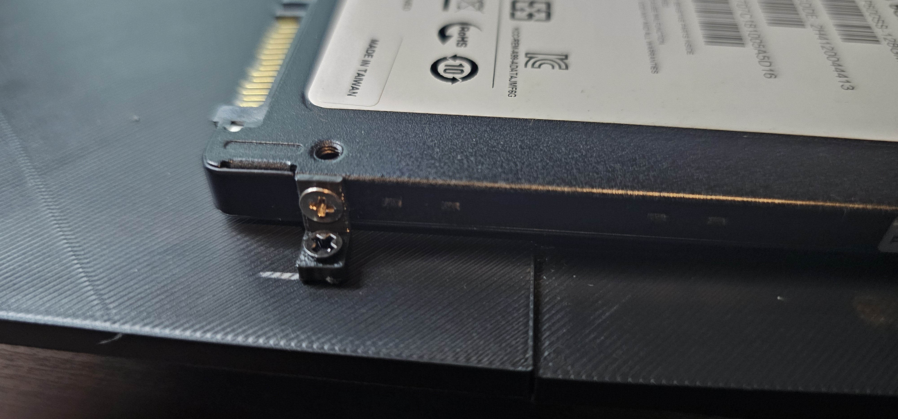
The 128 GB 2.5-inch SATA SSD was one example. A small printed retention component was added using the drive's existing mounting points, allowing it to be secured without redesigning the complete enclosure.
Design Approach: When a localized feature needed improvement, a small replaceable component was generally preferable to reprinting the entire chassis. This reduced material waste, print time, and unnecessary redesign.
Original Power Button Integration
The original laptop power-switch PCB was retained rather than modifying the motherboard's electrical power-control circuitry.
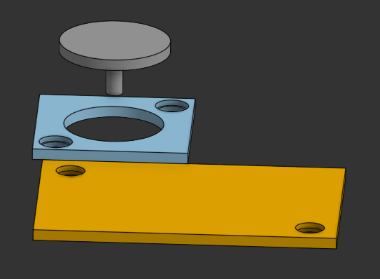
Exploded CAD view of the custom button and its retaining plate + PCB-retaining plate.
The completed external button installed in the top panel.
A printed bracket secures the original power-button PCB inside the enclosure. A separate printed actuator passes through the top panel and mechanically presses the original tactile switch.
This preserved the manufacturer's original electrical interface while adapting its mechanical operation to the new chassis.
Threaded Inserts & Serviceability
Brass heat-set threaded inserts were incorporated into the printed enclosure to provide durable reusable threads at major fastening points.
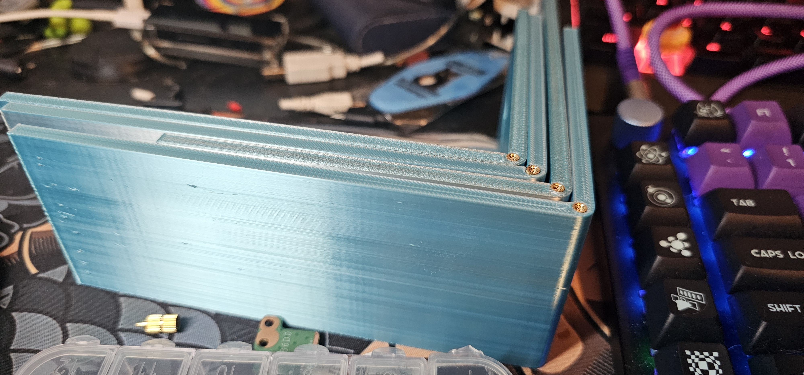
The inserts allow the enclosure to be opened and reassembled for maintenance without repeatedly driving screws directly into PLA. This was particularly useful for a project expected to continue receiving hardware and software adjustments.
FDM Fabrication
The enclosure was printed on a Bambu Lab A1 Mini using a 0.4 mm nozzle. The structure was divided into multiple printable pieces that could be fastened together around the internal hardware.
Two filament styles were intentionally combined:
- Black PLA for the upper and lower enclosure sections
- Blue/silver silk PLA for the center body
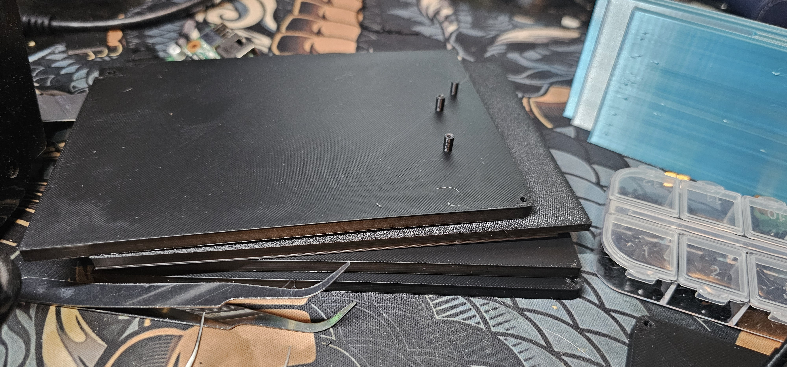
Black PLA enclosure panels.
Blue/silver silk PLA center sections with threaded inserts.
Print Failure & Recovery
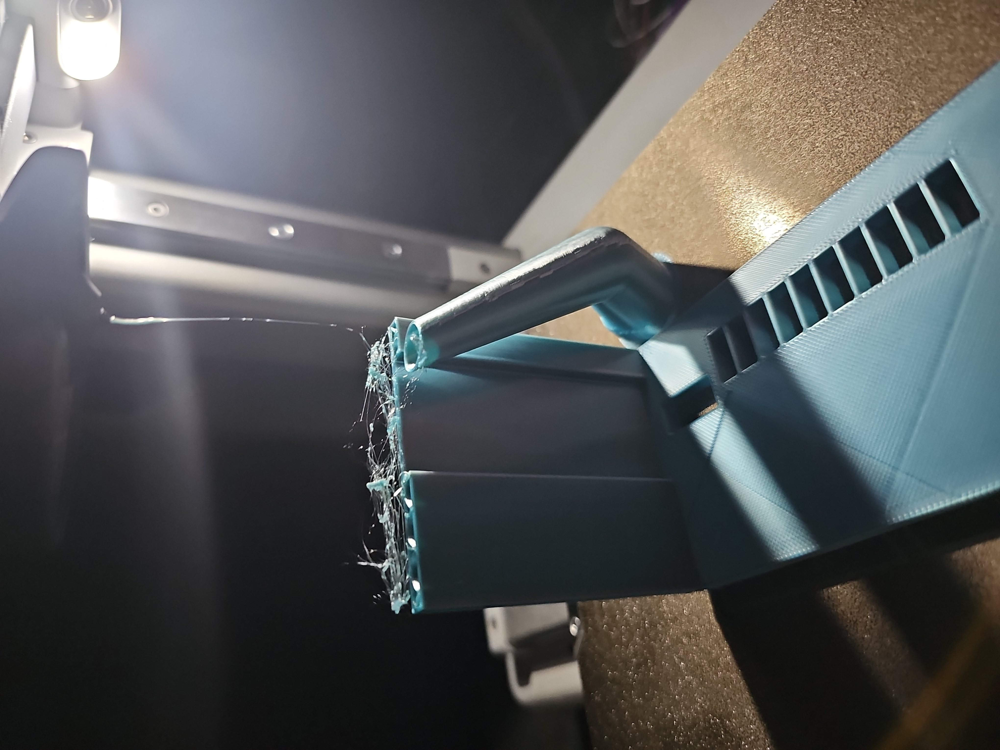
One large enclosure print failed after the printer nozzle clogged and stopped extruding filament. The failed nozzle was replaced, and the component was successfully reprinted.
The failure was relatively simple to correct, but it reinforced the practical manufacturing side of the project: a finished CAD model does not guarantee a successful physical part.
Final Assembly
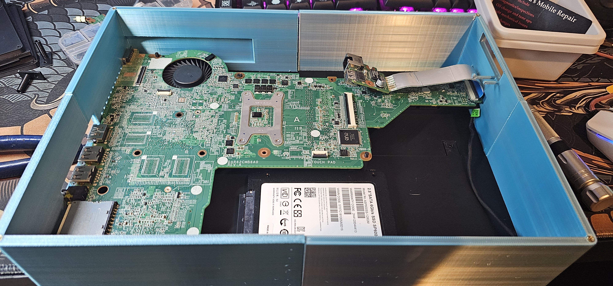
The finished internal layout integrates the HP Pavilion motherboard, 12 GB of RAM, 128 GB SATA SSD, original cooling hardware, Wi-Fi, power-switch PCB, and required daughterboard connections inside the custom enclosure.
External Connectivity
Available I/O
- HDMI - primary display output
- VGA - available, currently unused
- Ethernet
- 3 x USB ports
- Wi-Fi
- Bluetooth through a USB adapter
Not Required for Current Use
- Analog audio connection
- SD card interface
- Original internal laptop display during normal operation
Why "MINT OREO"?
The black upper and lower enclosure sections combined with the blue/silver center body unexpectedly made the completed computer resemble a mint Oreo cookie. Additionally, the use of Linux Mint OS led to an unintentional yet perfect naming convention.
The appearance and OS inspired the project name, but the acronym also describes the purpose of the build:
MINT OREO
Mini
Integrated
Notebook
Transplant
Operating as a
Repurposed
Entertainment
Outpost
Results & Tradeoffs
Outcomes
- Created a dedicated bedside media station for TV-connected YouTube playback
- Repurposed aging laptop hardware into a functional standalone computer
- Reduced YouTube operating temperatures from the original platform's ~90-100 °C to approximately 60-70 °C
- Achieved stable 1080p YouTube playback with almost no dropped frames
- Configured Linux Mint XFCE 22.3 for older hardware
- Resolved external HDMI operation under Linux
- Designed a complete enclosure from scratch in Onshape
- Integrated laptop motherboard, storage, cooling, controls, and I/O into a serviceable enclosure
- Reused the original laptop power-switch electronics instead of electrically modifying the board
- Used modular printed repairs to avoid unnecessary enclosure reprints
Known Tradeoffs
- BIOS and POST output still require the original internal laptop display connection
- The enclosure is larger than a purpose-built modern mini PC because it follows the irregular geometry of a laptop motherboard
- Bluetooth requires a USB adapter
- The system is optimized for lightweight entertainment rather than modern high-performance computing
Engineering Takeaways
Useful Projects Often Start With Repeated Friction
The project was not motivated only by reusing old hardware. It also came from a repeated daily annoyance: moving my main laptop between school use and TV-connected media use. Building a dedicated device turned that inconvenience into a practical system-integration problem.
Hardware Selection Should Follow the Workload
The original AMD board was functional, but its thermal behavior made it poorly suited to extended YouTube playback. Changing platforms produced a much larger improvement than continuing to optimize unsuitable hardware.
Prototype Only What Needs Testing
Skeletonized mounting-layout prints allowed critical motherboard dimensions to be tested without repeatedly printing complete enclosure sections.
Repair Can Be Better Than Redesign
When individual mounting features needed revision, small add-on parts allowed the existing enclosure to remain in service instead of wasting an otherwise successful large print.
Old Hardware Can Still Be Useful
The Core i3-3110M is far behind modern processors, but matching the hardware with an appropriate operating system and workload allowed it to remain useful for reliable 1080p media playback.
System Integration Crosses Disciplines
The completed computer required mechanical design, computer hardware, thermal management, Linux configuration, graphics troubleshooting, and additive manufacturing to work together as one system.
What This Project Demonstrates
Hardware & Software
- Laptop disassembly and hardware reuse
- Computer hardware diagnostics
- CPU cooling-system maintenance
- SATA storage integration
- Graphics-driver troubleshooting
- External-display diagnostics
- Linux Mint installation and configuration
- Linux terminal and display utilities
- Browser and media-playback optimization
Mechanical & Engineering
- Onshape CAD
- Custom component packaging
- Motherboard standoff design
- Design for FDM manufacturing
- Bambu Lab A1 Mini operation
- Heat-set threaded inserts
- Modular repair components
- Comparative thermal testing
- Failure analysis and iterative prototyping
- Cross-disciplinary system integration
Final Result
MINT OREO now operates as a standalone Linux mini PC capable of reliable 1080p YouTube playback while giving aging laptop hardware a useful second life. More importantly, it now fills the role that previously required repeatedly moving my main laptop between school use and TV-connected media use.
The project began with the motherboard from my first laptop and was eventually completed using my grandmother's former HP Pavilion 17, which offered the stronger thermal and media-performance characteristics needed for the final system.
What started as an attempt to reuse an old motherboard ultimately became a system-level project involving hardware evaluation, thermal testing, operating-system configuration, display troubleshooting, CAD, additive manufacturing, and mechanical integration.
Project Files
The linked Onshape document contains the enclosure CAD model used for the project and is shared for viewing.